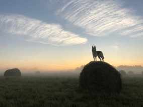
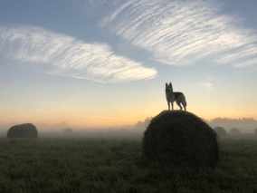
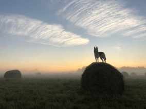

По опросам ВЦИОМ, 95% россиян мечтают куда-нибудь поехать, но только 36%
планируют провести отпуск в родной стране. Мол, чего мы тут, дома, не видели? На самом деле,
Россия — это целая вселенная с ласковым морем юга, густыми лесами Саян и суровыми льдами плато
Путорана. А ещё увидеть все эти красоты можно без миллионов на счету, загранпаспорта и
многочасовых перелетов. Как, например, Вера Башмакова — смелая молодая мама, которая взяла
в охапку троих детей, усадила их в свою «Ладу» и проехала 20 тысяч километров по родной стране.
Мы выбрали и описали некоторые интересные места, достойные вашего отпуска.
Часовых поясов 11
Объектов природного наследия ЮНЕСКО 12
Объектов культурного наследия ЮНЕСКО 16
Природных заповедников 105
Аэропортов 241

Куршская коса
Здесь, посреди лесов и песчаных дюн, вы сможете увидеть два водных
горизонта — спокойного Куршского залива с одной стороны и подёрнутого рябью волн
Балтийского моря
с другой. Уникальная природная зона на краю российского анклава.
На этом Калининградская область не заканчивается. Для путешественника
и исследователя там же по соседству — самая западная точка России, Балтийская
коса, — и немецкое
наследие россыпи небольших приморских городов. Атмосфера здешних мест исключает суету, окуная в
спокойствие природы и запах стального, прохладного моря.
Кольский
Почти весь полуостров находится за Полярным кругом. Саамская тундра,
от которой на юг — тайга, а на север — Ледовитый океан,
прикидывающийся Баренцевым морем.
Возможно, вы смотрели Звягинцева и даже слышали историю арктического
фестиваля в Териберке. Возможно, слово «Хибины» не осталось под снегом школьных
воспоминаний об
уроках географии. Возможно, вы не интересовались пронизывающей земную кору сверхглубокой
скважиной,
а от апатитов вас давно накрывает апатия. Но ваша мечта увидеть северное сияние начинает
сбываться с
билетом в Мурманск.
Алтай
Алтай — одно из красивейших мест в России.
В первую очередь из-за гор: если ехать вдоль хребта, вы увидите склоны, усыпанные соснами, горные
реки и
озёра. А если вы откроете в автомобиле окна, сможете познакомиться с невидимым чудом
здешних мест — горным
воздухом.
Климат на Алтае умеренный, поэтому ехать сюда лучше всего летом. Так вы
увидите всё разнообразие местной флоры и фауны. По лесам Алтая бродят лоси, над хребтами летают
орлы, а на равнинах
пасутся косули. И знаменитые манулы — тоже обитатели Алтайского края.
Зимний Байкал
Всем известен Байкал как крупнейшее озеро в мире.
Многие также знают, что это самый большой источник пресной воды и одно из красивейших мест
в России.
Конечно, это всё так. Но Байкал ещё идеальное место для соревнований по
скийорингу. Это такой вид спорта, когда лыжник привязывает себя к мотоциклу, и тандем старается
развить как можно
бóльшую скорость на льду. В марте 2019 года на фестивале «Байкальская
миля» был поставлен мировой рекорд — 197.011 км/ч.
Карелия
Сибирь заканчивается не на Урале, а в Карелии: образующая тайгу
сибирская лиственница не растёт западнее Водлозера. Зато здесь она вымахивает на 30 метров
—
леса карельских национальных парков из-за непроходимых болот никогда не знали топора. Некоторым
соснам уже больше чем полтысячелетия. Прикоснитесь к живому существу, видевшему солнце раньше,
чем увидал его Иван Грозный. В девственном лесу на сотню километров не встретишь тропы.
А на редких
тропинках деревья в паре метров от земли помечены медвежьими когтями. Чтобы все знали, кто тут
хозяин.

 
